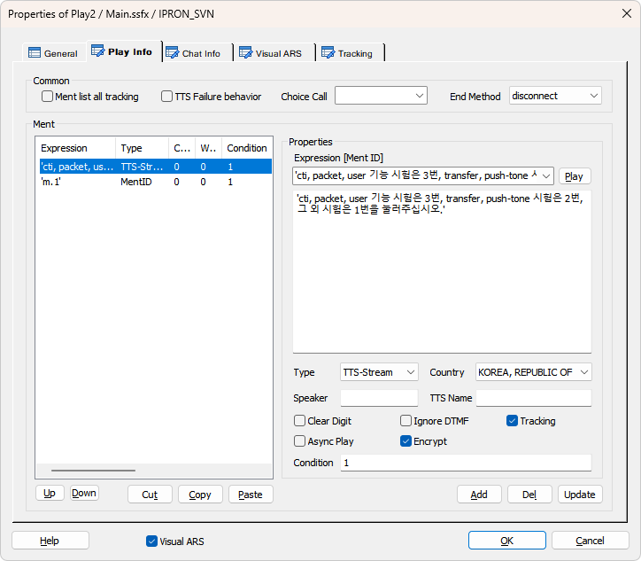
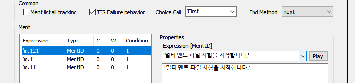
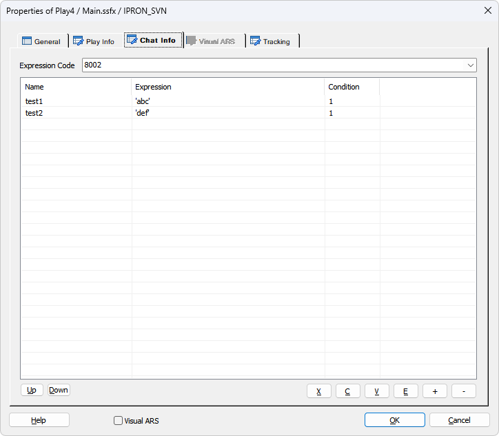
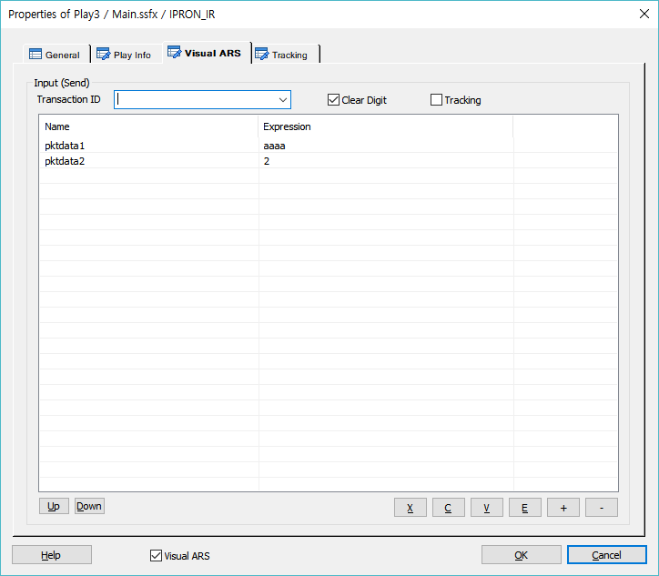
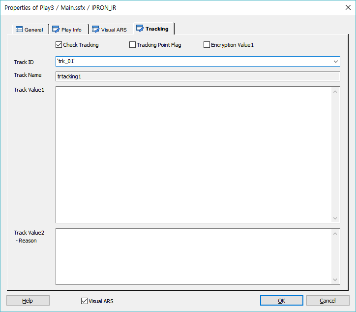

기본적으로 음성 멘트를 재생하기 위한 아이템으로 DefineMent Item에 정의한 MentID를 사용해서 Play하고, 멘트 파일 직접 입력, TTS등을 지원 합니다.
ICON

PROPERTIES
 Play Info
Play Info

Common
Ment list all tracking Check Box : 멘트 리스트에 지정된 전체 멘트를 대상으로 트래킹을 처리합니다.(개별 멘트 트래킹보다 우선합니다.)
TTS Failure Behavior : 멘트 리스트에서 첫 번째 항목 멘트 타입이 "TTS Stream" 또는 "TTS File" 일 경우 체크 되었을 때 유효하며, 첫 번째 멘트인 TTS Play에서 TTS 서버와 연동이 실패인 경우 첫 번째 멘트 이후 설정된 멘트는(TTS Stream, TTS File 포함 모든 타입) 첫 번째 멘트인 TTS Play의 대체 멘트로 Play 처리 됩니다.

SXML 태그 예제 : <playtts 태그 아래로 <if 태그 cond 에 session.command.result == _SLEE_FAILED_ 조건으로 TTS 에러를 체크하고 에러면 'm.1', 'm.11', 'm.13' 대체 멘트를 Play 한다.
이 예제는 보이는 ARS 사용 예제라 대체 멘트 cond에 session.command.reason == _TE_FINISH_ 조건도 비교 한다. 다만 첫 번째 대체 멘트는 무조건 Play 해야 하기 때문에cond = "1" 이다.
Choice Call : Multi Call 에서 콜을 선택 합니다.(2개 콜 까지 가능, GetChannel 로 생성)
End Method : Ment Play 도중 에러 발생 시 다음 Flow로 넘어 갈지 종료 할지를 설정 합니다.
Expression [Ment ID] : 재생할 음성 파일을 지정합니다.
- DefineMent Item에 정의된 MentID가 콤보박스 리스트로 제공되며 리스트에서 멘트를 선택 할 수 있습니다.
- 멘트 파일 이름이나 MentID가 들어있는 변수를 사용 할 수 있습니다.
- 가변 멘트를 처리 할 수 있습니다. 가변 멘트는 여러개의 멘트를 한번에 재생 합니다. 멘트는 작은 따옴표로 묶고 멘트와 멘트 사이는 콤마로 구분 합니다.( 예 : 'Ment1','Ment2','Ment3' )
- 연산식을 통해 멘트 이름을 조합 할 수 있습니다. 단, 변수와 문자를 같이 연산 할 수는 없습니다.( 예 : gs_TrData.BI09ZZ.from.O_27_합계금액 * 1 )
- 멘트 리스트에 여러개의 멘트를 등록하여 순서대로 재생 할 수 있습니다.
※ Expression 아래의 넓은 Editbox는 Type이 MentID일 경우에는 Ment Description이 출력되고 TTS일 경우에는 TTS 텍스트 를 편집할 수 있습니다.
Type : 재생 할 멘트의 타입을 설정 합니다.(MentID, File 타입을 제외한 모든 타입은 Country항목의 영향을 받아서 각 언어별로 멘트를 재생 합니다)
- MentID : Global의 DefineMent 에 정의된 ID
- File : File 직접 Play
- Number : 숫자 단위 Play( 마이너스 숫자는 재생 할 수 없음 )
- Digit : 단순 Digit Play
- Count : 숫자 세기( 1개, 2개, ~ )
- Ordinal : 서수 Play( 첫번째, 두번째, ~ )
- Money : 금액 Play
- Date : 날짜 Play(최소 4자리, yyyymmdd, 6자리 입력이면 yyyymm Play)
- Time : 시간 Play(최소 4자리, HHMMSS, 4자리 입력이면 HHMM Play)
- DateTime : 날짜와 시간 Play(최소 6자리, yyyymmddHHMMSS, 6자리 입력이면 yyyymm Play)
- DayOfWeek : 주 Play( "일요일", "월요일", ~ )
- TTS-KSC5601 : KSC 5601의 5601자 음성멘트를 Play 합니다.
- TTS-Stream : TTS Play 시 TTS 서버와 Stream 형식으로 Play
- TTS-File : TTS Play 시 TTS 서버에서 결과 음성파일을 다운로드 완료 후 그 파일을 Play
Play Button : 멘트 리스트에서 선택한 멘트가 MentID로 설정 되었다면 재생 합니다.(Tools>Options>Debug>Ment Path 설정 필요, 단, 가변멘트일 경우 현재는 재생 불가)
Stop Button : 현재 재생 중인 멘트를 중지 합니다.
Country : 국가별 언어를 설정하여 해당 타입으로 멘트를 재생할 경우 각 언어에 맞게 멘트를 재생 합니다.
- MentID, File 타입을 제외한 모든 타입 선택시 Country항목이 활성화 됩니다.
- 현재 지원하는 언어는 한국어, 영어, 중국어, 베트남어, 몽골어를 지원 합니다.
Speaker : Type이 TTS-Stream, TTS-File인 경우 TTS Speaker ID(숫자)를 설정합니다.(Speaker ID는 TTS 매뉴얼 참조)
TTS Name : Ment Type이 TTS-Stream, TTS-File이면 TTS Name 을 설정하여 TTS 서버를 선택할 수 있습니다.
- 값을 지정하지 않으면 기본 TTS 서버로 처리 됩니다.
- v5.x : 'ADT' 로 지정하면 TTS Adapter 를 통한 TTS 연동을 지원합니다.(Multi TTS 지원 불가)
- v6.0 이상 : "SWAT>IVR관리>미디어관리>TTS 관리" 에 등록한 Name 을 지정하면 TTS Adapter 를 통한 Multi TTS 연동을 지원합니다.
Clear Digit Check Box : 재생 전에 디지트 버퍼를 삭제 할지를 설정 합니다.(재생 전에 발생된 디지트를 버퍼에서 삭제 하지 않으면 재생 하려고 하는 멘트가 바로 중단 됩니다)
Ignore DTMF Check Box : 재생 중에 DTMF 입력을 무시 할지를 설정 합니다. DTMF 를 무시하면 전화 다이얼을 눌러도 멘트가 중지 되지 않기 때문에 멘트가 끝나야 다음 Flow처리를 위한 DTMF 를 받습니다.
Async Play Check Box : 비동기화 재생을 설정하여 재생을 하고 결과를 기다리지 않고 다음 Flow를 처리 합니다.
Tracking Check Box : 멘트별로 트래킹을 처리 합니다.
Encrypt Check Box : 멘트별로 내용을 암호화 하여 AI 시나리오일 경우 Dialogue CDR에 적용하며 Tracking이 함께 체크된 경우 시나리오 타입에 관계없이 Tracking CDR에도 적용합니다.(v6.2 이상)
Condition : 각 멘트의 재생 조건을 설정 합니다.
<Play 아이템 Ment Play 내부 처리>
Visual ARS 사용 : 보이는 ARS 사용 시 멘트 리스트에 멘트가 한개 이상일 경우 두 번째 멘트 부터 이전 멘트가 정상 Play 되었는지 체크하고 Ment Play를 하는 조건을 태그에 생성 한다.
Ment Play 중 보이는 ARS 이벤트가(사용자 화면에서 버튼 누름 또는 입력) 발생 할 경우 다음 Ment를 Play 하지 않고 처리를 하기 위함 이다.
GetDigit와 연결해서 사용하는 경우는 GetDigit 아이템의 collectdigit에서 보이는 ARS 입력을 받아서 처리 한다.
SXML 태그 예제: cond 에 session.command.reason == _TE_FINISH_ 조건 추가
* 첫 번째 멘트에는 _TE_FINISH_ 조건이 없는 것은 첫 멘트는 무조건 Play 해야 다음 멘트 부 터 reason 값으로 체크 하는데 개발자가 condition에 다른 조건을 준 경우 Play 안 될 수 도 있다.
* 첫 번째 멘트를 cond 조건에 의해 Play하지 못할 경우에 다음 부 터 라도 Play 하기 위해 첫 번 째 멘트 Play 하기 전에 session.command.reason = _TE_FINISH_ 로 초기화 한다.
Ment Play 에러 : Play 시에 에러가 발생할 경우(파일 없음 또는 기타 시스템 에러) 나머지 멘트를 Play하지 않고 스킵 하는 기능 이다. 빌드 옵션에서 "Skip digit input at play error in getdigit item" 옵션 설정을 해야 작동 한다.
Play Error에 대한 다른 분기 처리가 필요 한 경우에는 "Error" 이벤트 링크를 사용 할 수 있다.
SXML 태그 예제: 첫 번째 <play 태그 아래 <if 태그 cond 에 session.command.result == _SLEE_FAILED_ 조건으로 Play 에러를 체크 하고 에러면 Play 아이템의 마지막으로 이동 한다.
Up Button : 선택한 멘트를 위로 이동 합니다.
Down Button : 선택한 멘트를 아래로 이동 합니다.
Cut Button : 선택한 리스트를 잘라냅니다.(Ctrl+X)
Copy Button : 선택한 리스트의 내용을 복사 합니다.(Ctrl+C)
Paste Button : 복사한 리스트의 내용을 붙여넣기 합니다.(Ctrl+V)
Add Button : 지정한 멘트를 추가 합니다.
Del Button : 선택한 멘트를 삭제 합니다.
Update Button : 선택한 멘트의 내용을 갱신 합니다.
Visual ARS Check Box : 보이는 ARS 사용 여부 체크 박스 입니다.
Visual ARS 탭에 데이터 리스트가 없으면 체크 박스가 체크되어 있어도 빌드 시 보이는 ARS 태그가 생성되지 않습니다.
 Chat Info
Chat Info
* ForCus v6.0 이상 지원

※ Chat 지원 시나리오 설정을 했을 때 Chat Info 탭이 활성화 됩니다.
Expression Code : Chat Text 로 표현하지 못하는 이미지나 아이콘 등을 미리 정의한 코드입니다.
※ 리스트에 입력된 data1, data2 는 Expression Code 8000 의 상세 코드입니다.
※ Chat 콜 일때 Chat Text 출력은 Play Info 탭 > Ment Expression 에 입력된 MentID 의 Description 또는 TTS 인 경우 합성 문자열이 출력 됩니다.
 Visual ARS
Visual ARS
* ForCus v5.1 이상 지원

· 보이는 ARS(VARS) 전송 전문(Json 포멧)을 입력 합니다. 수신 전문이 없는 전송 전용 입니다.
보이는 ARS의 메뉴 입력이 있는 화면에서 입력이 있을 경우(메뉴 선택) 입력에 대한 수신처리는 GetDigit 아이템 collectdigit 에서 입력 처리가 된다.(Digit 입력과 같은 @name.digits 시스템 변수에 값 할당, 보이는 ARS 수신 전문 digits에 값이 할당 되어 있음)
사용자 입력은 있으나 GetDigit 아이템의 collectdigit에서 값을 가져오지 않은 경우에는 Digit 입력과 같이 Digit 버퍼에 사용자가 선택한 메뉴에 대한 번호가 들어 있으며, Play, GetDigit 등의 Visual ARS 탭의 "Clear Digit" 또는 Ment Info 탭의 "Clear Digit" 옵션으로 버퍼 초기화가 가능하다.
Transaction ID : TB 에서 전문을 전송할 대상(보이는 ARS-Adapter)을 찾기 위한 서버 키 입니다.
Clear Digit Check Box : VARS가 결과가 Digit 타입 일 때 Digit 입력과 동일하게 처리 할 수 있기 때문에 상황에 따라 디지트 버퍼를 초기화 한다.
Tracking Check Box : 보이는 ARS에 대한 트래킹 태그를 생성한다.
 Tracking
Tracking

Play하는 Ment ID에 대한 트래킹을 처리합니다.
Check Tracking Check Box : Tracking을 사용 할 것인지를 체크합니다.
Tracking Point Flag Check Box : 특별한 Tracking Flag를 설정하여 SWAT에서 트래킹 시에 이 플래그가 설정된 항목만 트래킹 할 수 있습니다.
Encryption Value1 Check Box : Track Value1 속성 데이터에 대해서 암호화 처리를 합니다.
Track ID : 정의한 Track ID를 선택하거나 입력 합니다.
- DefineTrack Item에 정의된 Track ID가 콤보박스 리스트로 제공됩니다.(Type이 없거나, Play인 경우)
Track Name : Track ID를 선택하면 같이 정의된 이름을 출력합니다.(SWAT에서 이 이름으로 트랙킹 시에 사용합니다.)
Track Value1 : 트래킹 시에 사용할 값을 입력 합니다.
Track Value2 :트래킹 시에 사용할 값을 입력 합니다.(결과에 대한 Reason값)
RESULT
· 처리 결과 세션 변수
session.command.result : 처리 성공(_SLEE_SUCCESS_), 실패(_SLEE_FAILED_)
session.command.reason : 실패면 실패 오류코드(시스템 상수 참조)
RELATED